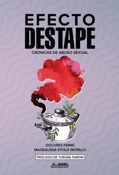

Buscar
Edición N° 160

Sudestada Nº 160 - Marzo 2020
Revista bimensual
Comprar edición impresaSumario
- Cien días
- Norita. 90 años de lucha
- Efecto Trueno
- La nave que va al infierno
- Machirulo
- Orillas. El libro de poesía de CinWololo
- Maru Leone. Dos textos
- Higui y la legítima autodefensa
- Las músicas pelean por más derechos en los escenarios
- Los cuerpos y las redes sociales
- ¿El amor es un algoritmo?
- El final de una Aurora
- El “Acuerdo del Siglo” para destruir a Palestina


Números Anteriores
-
N° 160
Sudestada Nº 160 - Marzo 2020
Comprar edición impresa -

N° 159
Diciembre 2019
Comprar edición impresa -
N° 158
Septiembre-Octubre-Noviembre 2019
Comprar edición impresa -
N° 157
Junio-Julio-Agosto 2019
Comprar edición impresa
Ver todos los numeros de la revista...
Edición N° 159

Diciembre 2019
Revista bimensual
Comprar edición impresaSumario
- Un continente en disputa
- La batalla de Chile
- Diario urgente de un golpe
- Te gusta vivir así
- Una fiesta feminista en el corazón de La Plata
- Un asco recíproco nos permite convivir
- El día que descubrieron a Colón
- Los días sin Ana
- “Hay una catástrofe de género, es necesario darse cuenta”
- Cantoras del Chile rebelde
- El freestyle es de las pibas
- Echando raíces
- "Se puede cuestionar este mundo difícil cantando"


Articulos más vistos


LIBRERÍA SUDESTADA

Colección infantil

Distribuidora de Libros

Suscripción

Sudestada en URUGUAY

Sudestada de Colección
-

N° 14
Mujeres. Crónicas de feministas en lucha
Sudestada de Colección
Comprar edición impresa -

N° 13
TOSCO y el sindicalismo combativo
Sudestada de Colección
Comprar edición impresa -

N° 12
Universos de Frida
Sudestada de Colección
Comprar edición impresa -
N° 11
Todos estos años de Spinetta
Sudestada de Colección
Comprar edición impresa
Ver todos los numeros de Sudestada de Colección
Cuadernos de Sudestada
-

N° 68
Diario de un lobizón (Cecilia Solá)
Cuadernos de Sudestada
Comprar edición impresa -
N° 67
Los días se volvieron ceniza (Nina Ferrari)
Cuadernos de Sudestada
Comprar edición impresa -

N° 66
Cuentos de mujeres atragantadas
Cuadernos de Sudestada
Comprar edición impresa -

N° 65
Efecto destape. Crónicas de abuso sexual
Cuadernos de Sudestada
Comprar edición impresa
Ver todos los numeros de Cuadernos de Sudestada
Colección para chic@s
-
N° 39
Amanda Manda
Colección para chic@s
Comprar edición impresa -
N° 38
Gabriela Mistral para chic@s
Colección para chic@s
Comprar edición impresa -

N° 37
ZAMBA para chic@s
Colección para chic@s
Comprar edición impresa -

N° 36
Vera ImPerfecta
Colección para chic@s
Comprar edición impresa
Ver todos los numeros de Colección para chic@s